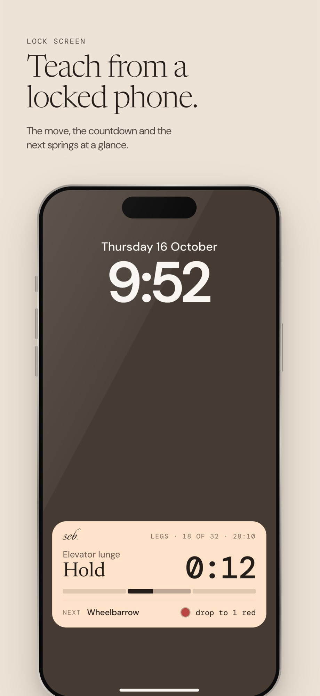
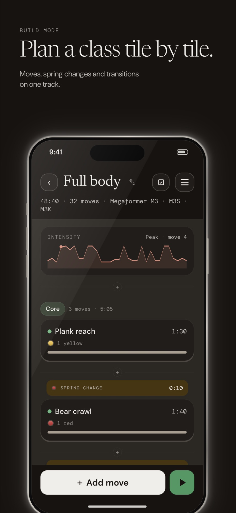
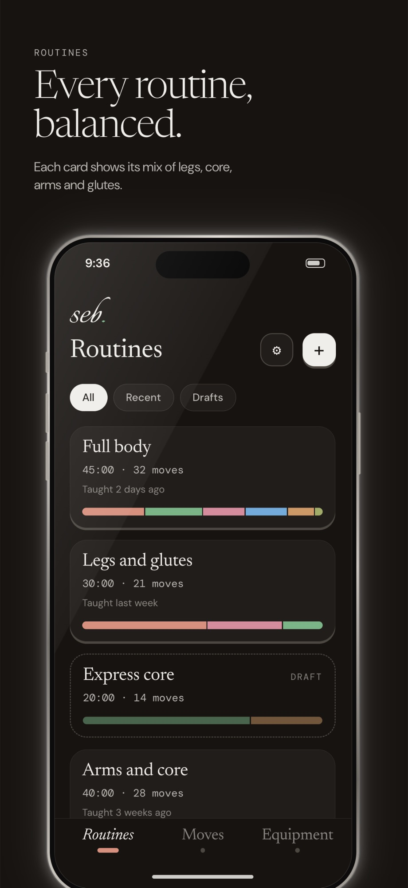
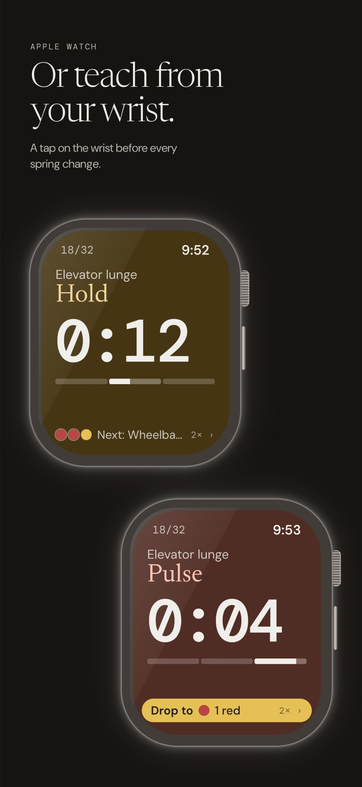
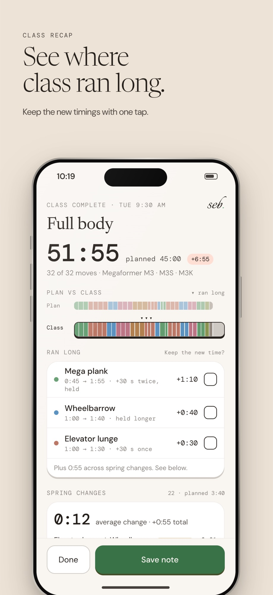

Teach from a locked phone.
The move, the countdown and the next springs stay on your Lock Screen. Lock the controls against stray taps while you're on the floor.

Sebastian is for group class instructors. Plan your routine sitting down, then run it hands-free: a countdown for every move, your springs on screen, and a heads-up before every change.
Plan every move, spring and second down to the detail. Sebastian times all of it, so you can keep your eyes on the room.
Lay the class out as a track of tiles: moves, springs, timed segments and the changes between them.
Press play. One big number, the whole screen in the segment's colour, and what's next always in view.
Sebastian is your instructor's diary: every class you've planned and taught, kept so you can lead the room with confidence.
Moves, spring changes and transitions sit on one track, colour-coded by body part. Drag to reorder and the times add themselves up.

Split a move into timed segments and call them what you call them: Hold, Pulse, Burnout. Each one gets its own colour.
Start from a built-in machine with its real springs, or set up your own studio's. Every move remembers its setting.
When the springs differ between two moves, a spring change appears between them. Add a transition anywhere you need a breath.
Save the moves you teach most, with notes and cues, and reuse them across routines. Split left and right sides with one swipe.

The countdown is the only thing that has to be read. Everything else is a glance.
Hold turns the room clay. You know where you are without reading a word.
Short cues mark each change. They play over your music without stopping it.
The class waits at the boundary and shows the new setting until the springs are set.
The move, the countdown and the next springs stay on your Lock Screen. Lock the controls against stray taps while you're on the floor.

The watch runs the whole class, with a tap on the wrist before every change. Control it from either device and the other follows.

The recap shows how long each move really took, next to what you planned. Keep the new timings with one tap, rate how the room felt, and leave yourself a note for next time. It's your diary of every class you've led, so the next one starts better than the last.

Open Equipment. Choose a built-in machine, or tap + to add your studio's own with its spring colours and counts.
On Routines, tap +, then Add move. Set each move's length, springs and segments. Drag tiles to put them in order.
Tap the green ▶. After a short countdown the class runs itself. Skip ahead, step back, add 30 seconds or pause whenever you need to.
When class ends, check the recap, keep the timings that worked, and the routine is ready for next time.
No account. No ads. No tracking. Your routines stay yours.